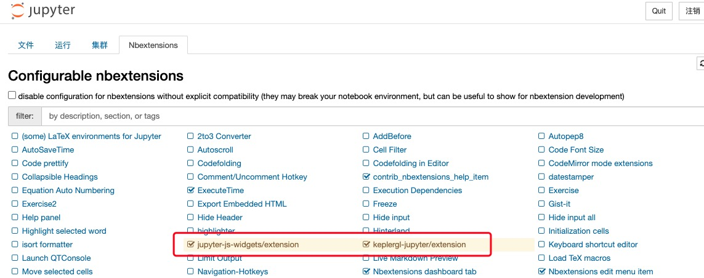

Data Visualization¶
Visualization Settings in Jupyter¶
pip install keplergl
If you want to display the visualization results in jupyter notebook, you need to check the jupyter-js-widgets (which may need to be installed separately) and keplergl-jupyter plugins
Visualization of data point distribution¶
-
transbigdata.visualization_data(data, col=['lon', 'lat'], accuracy=500, height=500, maptype='point', zoom='auto')¶
The input is the data points, this function will aggregate and then visualize it
Input
- dataDataFrame
The data point
- colList
The column name. The user can choose a non-weight Origin-Destination (OD) data, in the sequence of [longitude, latitude]. For this, The aggregation is automatic. Or, the user can also input a weighted OD data, in the sequence of [longitude, latitude, count]
- zoomnumber
Map zoom level (Optional). Default value: auto
- heightnumber
The height of the map frame
- accuracynumber
Grid size
- maptypestr
Map type, ‘point’ or ‘heatmap’
Output
- vmapkeplergl.keplergl.KeplerGl
Visualizations provided by keplergl
Method:
import transbigdata as tbd
import pandas as pd
#读取数据
data = pd.read_csv('TaxiData-Sample.csv',header = None)
data.columns = ['VehicleNum','Time','Lng','Lat','OpenStatus','Speed']
#可视化数据点分布
tbd.visualization_data(data,col = ['Lng','Lat'],accuracy=300)
Trajectory Visualization¶
-
transbigdata.visualization_trip(trajdata, col=['Lng', 'Lat', 'ID', 'Time'], zoom=10, height=500)¶
The input is the trajectory data and the column name. The output is the visualization result based on kepler
Input
- trajdataDataFrame
Trajectory points data
- colList
The column name, in the sequence of [longitude, latitude, vehicle id, time]
- zoomnumber
Map zoom level
- heightnumber
The height of the map frame
Output
- vmapkeplergl.keplergl.KeplerGl
Visualizations provided by keplergl
Method
import transbigdata as tbd
import pandas as pd
#读取数据
data = pd.read_csv('TaxiData-Sample.csv',header = None)
data.columns = ['VehicleNum','Time','Lng','Lat','OpenStatus','Speed']
#轨迹数据可视化
tbd.visualization_trip(data,col = ['Lng', 'Lat', 'VehicleNum', 'Time'])
OD Visualization¶
-
transbigdata.visualization_od(oddata, col=['slon', 'slat', 'elon', 'elat'], zoom='auto', height=500, accuracy=500, mincount=0)¶
The input is the OD data and the column. The output is the visualization result based on kepler
Input
- oddataDataFrame
OD data
- colList
The column name. The user can choose a non-weight Origin-Destination (OD) data, in the sequence of [origin longitude, origin latitude, destination longitude, destination latitude]. For this, The aggregation is automatic. Or, the user can also input a weighted OD data, in the sequence of [origin longitude, origin latitude, destination longitude, destination latitude, count]
- zoomnumber
Map zoom level (Optional). Default value: auto
- heightnumber
The height of the map frame
- accuracynumber
Grid size
- mincountnumber
The minimum OD counts, OD with less counts will not be displayed
Output
- vmapkeplergl.keplergl.KeplerGl
Visualizations provided by keplergl
Method
import transbigdata as tbd
import pandas as pd
#读取数据
data = pd.read_csv('TaxiData-Sample.csv',header = None)
data.columns = ['VehicleNum','Time','Lng','Lat','OpenStatus','Speed']
#提取OD
oddata = tbd.taxigps_to_od(data,col = ['VehicleNum','Time','Lng','Lat','OpenStatus'])
#OD可视化
tbd.visualization_od(oddata)